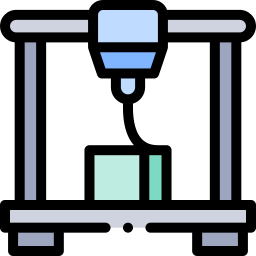
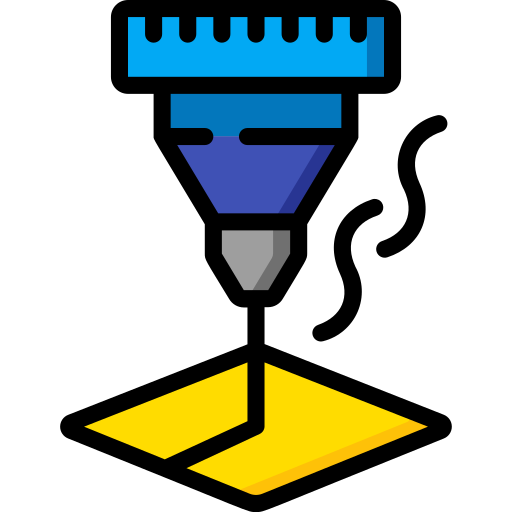
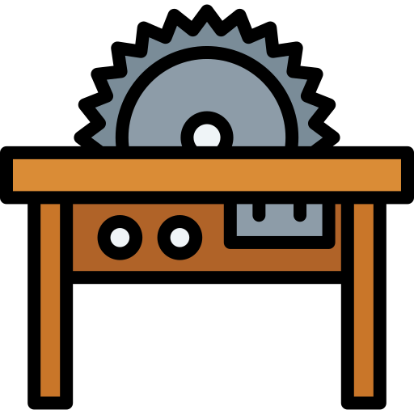

Hello!👋

My name is Melody, and I am a senior at Carnegie Mellon
University, studying Mechanical Engineering, Design, and Human-Computer
Interaction. My previous experience spans robotics, aerospace, and product
design, with a focus on rapid prototyping and CAD modeling. I hope to bring both
technical and creative perspectives into functional, user-centered solutions to create
meaningful interactions between people, products, and the world around us.
When I'm not working, you might find me frolicking outside, checking out local
events, playing music, or falling down YouTube rabbit holes 🐇
Feel free to reach out at ✉️
mmchu@andrew.cmu.edu!
Skills
Physical Prototyping
-  3D Printer
-  Laser Cutter
-
 Manual Mill
Manual Mill
-
Band Saw
-  Table Saw
-
Lathe
-
CNC Machine
-
 Sewing
Sewing
Mechanical Design
-
 Solidworks
Solidworks
-
FEA
-
NX Siemens
-
Fusion 360
-
Inventor
Design & Digital Tools
-
 Figma
Figma
-
 Adobe Creative Suite
Adobe Creative Suite
-
 Python
Python
-
MATLAB
-
Arduino
Education
Carnegie Mellon University, Pittsburgh, PA
Bachelor of Science in Mechanical Engineering
Design Minor, Human-Computer Interaction Minor
Graduation: May 2025 | GPA: 3.7/4.0 | Dean’s List ‘22 – ‘24
Relevant Coursework:
Core Math/Science
- Intro to Probability Theory
- Differential Equations
- Linear Algebra & Vector Calculus
- Basic Experimental Physics (LAB)
- Intro to Modern Chemistry I (CMY)
- Physics I, II
- Integration & Approximation
- Differential and Integral Calculus
Engineering (Eng.) Courses
- Mech. Systems Experimentation (LAB)
- Manufacturing Futures
- Product Design (Mech. Eng. Senior Capstone)
- Mech. Design I: 2D Design
- Mech. Design II: 3D Design
- Mech. Design III: Methods & Applications
- Thermodynamics
- Fluid Mechanics
- Electronics: Sensors & Actuators
- Prof. Development in Mechanical Eng.
- Numerical Methods
- Thermal-Fluids Experimentation (LAB)
- Heat Transfer
- Dynamics
- Dynamic Systems & Control
- Fund. of Programming & CS
- Intro to Electrical & Computer Eng. (LAB)
- Fund. of Mechanical Eng.
Design and Human-Centered Computing
- Playful Interactions
- User Experience (UX) Research and Design
- Media & Communication Design I, II
- Design for Digital Systems
- Drawing for Non-Majors
- Garment Pattern Construction
- Communication Design Fundamentals
- Product Design Fundamentals
- Visual Notation & Journaling
- Human Experience in Design
- Applied Fabrication for HCI
- Persuasive Design
- Design of AI Products and Services
- Design for Human-Centered Software
Humanities and Arts
- Psychology of Human Intelligence
- Writing About Literature & Art
- Writing About Data
- Survey of Forms: Poetry
- AP Music Theory
- AP US Government & Politics
Research and Special Projects
- Leadership Development Seminar
- CMU Undergraduate Research
- Intro to Manual Machining (MACHINE SHOP)
- Intro to Wood Working (MACHINE SHOP)
- Pragmatic Photography (IDEATE)
- Intro to E-Textiles (IDEATE)
- Experiential Learning I, II, III
Experience
 Vehicle Mechanisms
Engineering Intern - Relativity Space
Vehicle Mechanisms
Engineering Intern - Relativity Space
Long Beach, CA | May 2024 - Aug 2024
- Investigated in-house manufacturability of resolver sensors via reverse engineering, literature review, calculations, data collection, and rapid parallel prototyping.
- Designed mechanism installation tool with custom clamps, supported with extensive hand-calculations, CAD, and prototyping.
 Mechanical Design Intern -
Bimotal, Inc.
Mechanical Design Intern -
Bimotal, Inc.
Berkeley, CA | May 2023 - Aug 2023
- Led battery pack redesign exploration using UX research, hand sketches, and CAD, complying with brand/market aesthetics, frame compatibility, and battery cell specifications.
- Conceptualized, machined, and assembled NVH test rig to measure sound levels at different torques and speeds.
 Student Researcher - Carnegie Mellon Design Research Collective
Student Researcher - Carnegie Mellon Design Research Collective
Pittsburgh, PA | Apr 2022 - Sep 2022
- Adapted Unity GUI for generalized RL robotic agents in simulated manufacturing environment (C#).
 Student Researcher - Center for
Atmospheric Particle Studies Research Lab
Student Researcher - Center for
Atmospheric Particle Studies Research Lab
Pittsburgh, PA | Jun 2022 - Aug 2022
- Integrated motors and electronics into a novel machine that automates dispensing and detection of carbon filters.
- Fabricated lights/camera mounts and other hardware using CAD, 3D printers, laser cutters, and handheld tools.
 Electromechanical Systems Engineering
Intern
Electromechanical Systems Engineering
Intern
NASA Goddard Space Flight Center
Greenbelt, MD | Nov 2020 – Aug 2021
- Developed obstacle-avoidance using Q-learning in MATLAB robot simulation.
- Researched machine learning applications in space rovers via literature review and live interviews.
- Presented project at NASA Intern Symposium and to high school engineering programs.